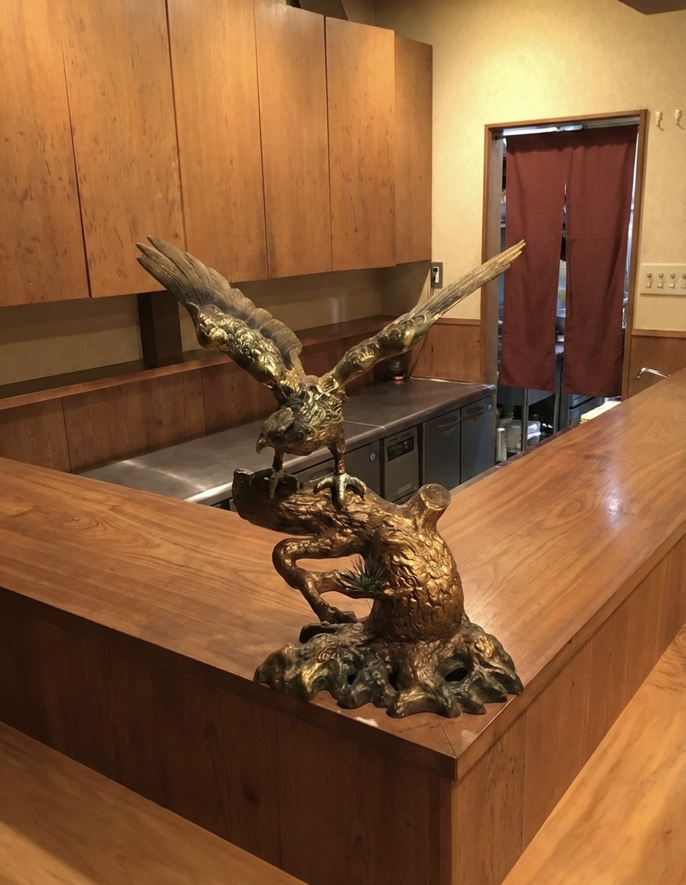

KYŌŌ HAJIME ― 京都・丸太町
丸太町の宵、五感で味わう酒と料理の饗宴。
喧騒を離れた路地裏に、美食の秘密基地。地下鉄丸太町駅から徒歩3分、14席だけの隠れ家で、酒匠が選ぶ日本酒と和洋が溶け合う一皿をご堪能ください。
丸太町駅 徒歩3分
駅近でありながら、喧騒を離れた落ち着きある立地。京都市中京区、両替町通夷川上るの路地裏にひっそりと佇みます。
厳選日本酒と和牛
「酒匠」の称号を持つ店主が、料理と一献の相性を丁寧に設計。物語のある贅沢なひとときをご提供します。
14席の隠れ家空間
重厚な一枚板のカウンターが並ぶ、限られた14席のみの空間。大切な人と静かに過ごせる特別な時間を。

INTRODUCTION ― 饗応の心
「元（はじめ）」から始まる、美食の新しい形。
店名の「饗応」には、心を込めて酒食でもてなすという意味を込めました。和食の伝統を大切にしながらも、イタリアンで培った自由な発想をひと匙。
重厚な一枚板のカウンターと、静かに時を刻む鷹の佇まい。14席の限られた空間だからこそ、お一人おひとりに寄り添い、最高の一献をご提案いたします。
店主のこだわりを見る
CUISINE ― 和と洋が溶け合う一皿
本日の特選素材と、酒匠が選ぶ銘酒。
店主自らが目利きし、熟成のピークを見極めた極上の肉。溢れ出る旨味と、口の中でほどけるような脂の甘みを、選び抜かれた日本酒と共にご堪能ください。
「酒匠」の称号を持つ店主が、料理との相性を考え抜いた日本酒をセレクト。物語のある一杯をご提供します。
メニューを見る